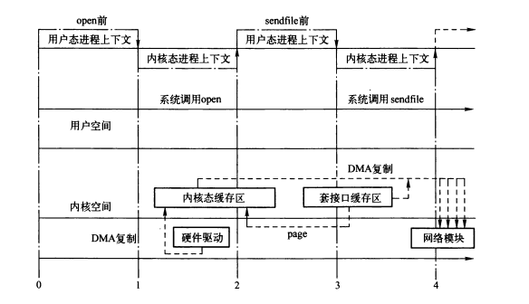

套接口缓存
Table of Contents

linux中使用 sruct sk_buff 数据结构来描述已经接受或者代发送的数据报文信息。后续我们使用“SKB”来指代 struct sk_buff 。
SKB的操作函数以及宏定义设计以下文件：
- include/linux/skbuff.h，SKB结构定义以及宏定义。
- net/core/skbuff.c，操作SKB的函数。
1 sk_buff 结构
struct sk_buff结构定义比较复杂，其成员大致可以分为以下几类：
- 组织SKB的成员变量。
- 通用成员变量。
- 标志性成员变量。
- 与特性相关的成员变量。
SKB分为两个部分，一部分是SKB描述符（sk_buff结构本身），另一部分为数据缓冲区。
struct sk_buff { /* These two members must be first. */ struct sk_buff *next; struct sk_buff *prev; struct sock *sk; struct skb_timeval tstamp; struct net_device *dev; struct net_device *input_dev; union { struct tcphdr *th; struct udphdr *uh; struct icmphdr *icmph; struct igmphdr *igmph; struct iphdr *ipiph; struct ipv6hdr *ipv6h; unsigned char *raw; } h; union { struct iphdr *iph; struct ipv6hdr *ipv6h; struct arphdr *arph; unsigned char *raw; } nh; union { unsigned char *raw; } mac; struct dst_entry *dst; struct sec_path *sp; /* * This is the control buffer. It is free to use for every * layer. Please put your private variables there. If you * want to keep them across layers you have to do a skb_clone() * first. This is owned by whoever has the skb queued ATM. */ char cb[48]; unsigned int len, data_len, mac_len; union { __wsum csum; __u32 csum_offset; }; __u32 priority; __u8 local_df:1, cloned:1, ip_summed:2, nohdr:1, nfctinfo:3; __u8 pkt_type:3, fclone:2, ipvs_property:1; __be16 protocol; void (*destructor)(struct sk_buff *skb); #ifdef CONFIG_NETFILTER struct nf_conntrack *nfct; #if defined(CONFIG_NF_CONNTRACK) || defined(CONFIG_NF_CONNTRACK_MODULE) struct sk_buff *nfct_reasm; #endif #ifdef CONFIG_BRIDGE_NETFILTER struct nf_bridge_info *nf_bridge; #endif #endif /* CONFIG_NETFILTER */ #ifdef CONFIG_NET_SCHED __u16 tc_index; /* traffic control index */ #ifdef CONFIG_NET_CLS_ACT __u16 tc_verd; /* traffic control verdict */ #endif #endif #ifdef CONFIG_NET_DMA dma_cookie_t dma_cookie; #endif #ifdef CONFIG_NETWORK_SECMARK __u32 secmark; #endif __u32 mark; /* These elements must be at the end, see alloc_skb() for details. */ unsigned int truesize; atomic_t users; unsigned char *head, *data, *tail, *end; };
1.1 SKB组织相关的变量
sk_buff结构中，很多结构是为了便于组织结构本身，例如下面两个变量。
struct sk_buff *next; struct sk_buff *prev;
通过这两个指针，将SKB连接成一个双向链表。此链表有一个要求：每个SKB必须能被整个链表头部快速找到，通过在第一个SKB节点前面插入另一个辅助的sk_buff_head结构的头节点，可以认为该sk_buff_head结构就是SKB链表的头节点。
struct sk_buff_head { /* These two members must be first. */ struct sk_buff *next; struct sk_buff *prev; /* SKB链表中的节点数量，即队列长度 */ __u32 qlen; /* 控制对SKB链表的并发操作的自选锁 */ spinlock_t lock; };
Figure 2: SKB链表
1.2 数据存储相关的变量
struct sock *sk
SKB的宿主传输控制块。SKB的宿主传输控制块在网络数据报文由本地发出或者由本地接受时才有效，使传输控制块与套接口及用户应用程序相关。当一个SKB仅在二层或者三层被转发时（即源IP和目的IP都不是本机地址），指针为NULL。
unsigned int len
SKB中数据部分长度，包括线性缓存区中数据长度（data指向），SG类型的聚合分散I/O的数据以及FRAGLIST类型的聚合分散I/O的数据长度。该字段值随着SKB从一个协议向另一个协议层传递而改变，向上传递时，下层首部不再需要，向下层传递时，需要添加本层首部。因此len也包含了协议首部的长度。
unsigned int mac_len
二层首部长度
void (*destructor)(struct sk_buff *skb)
SKB的析构函数指针，在释放SKB时被调用，完成一些必要的工作。在转发时，SKB没有宿主传输控制块，该指针通常为NULL。通常分别在skb_set_owner_t()和skb_set_owner_w()中被初始化成sock_rfree()和sock_wfree()。当释放SKB后，该SKB不再属于制定的传输控制块，因此要根据释放的SKB的truesize来调整传输控制块的接收和发送缓存区大小（sk_rmem_alloc和sk_wmem_alloc）。
unsigned char *head, *data, *tail, *end
head和end分别指向缓冲区的头和尾；data和tail分别指向数据的头和尾。在发送数据时，每一层协议在head和data之间填充协议首部数据，还可能在tail和end之间添加数据。
unsigned int trusize
整个数据缓冲区的总长度，包括SKB描述符和数据缓冲区部分（保活线性存储区和聚合分散I/O缓冲区）。
atomic_t users
引用计数，用来表示有多少实体引用了该SKB，用于确定SKB的释放时机，计数为0时，SKB才能被释放。注意该计数器之保护SKB描述符，SKB数据缓冲区也有类似的计数器。
1.3 通用的成员变量
struct skb_timeval tstamp
接收时间戳或者发送时间戳。通常在网络设备受到一个数据包之后，通过netif_receive_skb()或者netif_rx()调用net_timestamp()进行设置。
struct net_device *dev
网络设备指针。改组段的作用与SKB时发送包还是接收包有关。在初始化网络设备驱动分配接受缓存队列时，将该指针指向收到数据包的网络设备。
发送数据包时，该指针指向输出数据包的网络设备。
Linux支持多种形式的虚拟网络设备，并由一个虚拟网络设备驱动管理。当这个虚拟设备被使用时，dev指针指向该虚拟设备的net_device结构。在输出时，虚拟设备驱动会在一组设备中选择合适的设备，并将dev指针修改为指向这个设备的net_device结构。而在输入时，当院士网络设备接收到报文后，根据某种算法选择合适的虚拟网络设备，并将dev指针指向这个虚拟设备的net_device结构。因此，某些情况下，此指针会在包处理过程中改变。
struct net_device *input_dev
接收报文的原始网络设备。如果是本地生成的，则为NULL，主要用于流量控制。
h（四层）, nh（三层）, mac（二层）
分别和i指向各层协议首部的指针。

Figure 3: 报文从二层项三层传递时的data指针变化
struct dst_entry *dst
目的路由缓存。
char cb[48]
SKB信息控制块，是每层协议的似有信息存储空间，由每一层协议自己维护并使用，并只在本层有效。在分配SKB时固定在SKB描述符中，当前为48字节，子沟为每一层协议存储必要的似有信息。在每个协议中，访问该字段的代码通常用宏实现以增强代码的可读性。例如，TCP用此成员存储tcp_sbk_cb结构的数据。
校验和
union { __wsum csum; __u32 csum_offset; };
__u8 ip_summed:2
标记传输层校验和的状态。
__u8 cloned
标记所属SKB是否已经克隆。
__u8 pkt_type
帧类型，分类是由二层目的地址来决定，对于以太网设备来说，该字段由eth_type_trans()初始化。
__u32 priority
发送或者转发数据包QoS类别。如果数据包是本地生成的，套接口层会设置该字段；如果包是转发的，则rt_tos2priority()会根据IP首部中TOS域来计算该字段值。
__be16 protocol
从二层设备的角度看到的上层协议，即链路层承载的三层协议类型。典型的协议包括IP、IPv6和ARP。由于每个协议都有各自处理接收数据包的函数，因此该区域被设备驱动用来通知上层电泳那个协议处理函数。由于每个网络驱动都调用netif_rx()来通知上层网络协议的处理函数，因此protocol必须在这些协议处理函数调用前初始化。
1.4 标志性变量
__u8 nohdr:1
标识payload是否被单独引用，不存在协议首部。如果被引用，则决不能再修改协议首部，也不能通过skb->data来访问协议首部。
__u8 local_df
表示此SKB在本地允许分片。
__u8 fclone:2
当前的克隆状态。
1.5 特性相关的成员变量
- __u8 nfct
- struct nf_conntrack *nfct;
- struct nf_bridge_info *nf_bridge;
- __u16 tc_index
- __u16 tc_verd
- struct sec_path *sp
2 skb_shared_info结构
skb_shared_info 保存了数据块的附加信息，其位置紧邻end指针指向的地址。
struct skb_shared_info { atomic_t dataref; //数据缓冲区的引用计数 unsigned short nr_frags; unsigned short gso_size; unsigned short gso_segs; unsigned short gso_type; __be32 ip6_frag_id; struct sk_buff *frag_list; skb_frag_t frags[MAX_SKB_FRAGS]; };
2.1 零拷贝
sendfile系统调用

Figure 4: read+write系统调用过程中的数据复制

Figure 5: open+sendfile系统调用过程中的数据复制
2.2 对聚合分散I/O数据的支持
聚合分散I/O 使得无需将报文组装成一个单块，可以避免大量的拷贝。
// frags和frag_list 用于指向聚合分散 I/O 数据 unsigned short nr_frags; struct sk_buff *frag_list; skb_frag_t frags[MAX_SKB_FRAGS]; #define MAX_SKB_FRAGS (65536/PAGE_SIZE + 2) typedef struct skb_frag_struct skb_frag_t; struct skb_frag_struct { struct page *page; //指向系统缓存页的指针 __u16 page_offset; //数据起始地址在文件缓存页中的偏移 __u16 size; //数据在文件系统缓存页中的长度 };
frag_list的使用场景：
- 在接收分片组后链接多个分片，组成一个完成的IP数据报。
- 在UDP数据报的输出中，将待分片的SKB链接到第一个SKB中。
- 用于存放FRAGLIST类型的聚合分散I/O的数据包，如果网络设备支持FRAGLIST类型的聚合分散I/O（lo），则可以直接输出。
分片通过shb_shared_info结构的 nr_frags 和 frag_list 来控制。
skb_is_nonlinear()用来测试是否存在聚合分散I/O缓存区（判断data_len成员）。
skb_linearize()可以把含有聚合分散I/O的缓存区线性化到线性缓存区。

Figure 6: 未启用聚合分散I/O分片的报文
data_len为0，nr_frags 为0， frag_list为NULL。
Figure 7: 启用聚合分散I/O分片的报文
数据长度len 为 x+S1+S2。 nr_frags为2，frags_list为NULL，说明为聚合分散I/O分片。

Figure 8: 启用聚合分散I/O分片的两个报文共享物理内存页
Figure 9: 包含FRAGLIST类型的分散聚合I/O数据的报文
frag_list不为NULL，说明存在FRAGLIST类型的分散聚合I/O数据。
2.3 对GSO的支持
现在很多网络设备都可以完成一些三层四层校验和的计算，有些甚至可以维护四层协议的状态机，通过硬件完成分段或者分片，因此传输层通过网络层提交给设备时可能是GSO段。
//生成GSO段是的MSS，GSO段是MSS的整数倍 unsigned short gso_size; //用gso_size分割时产生的段数 unsigned short gso_segs; //支持的GSO类型 unsigned short gso_type;
常见GSO类型：
- SKB_GSO_TCPV4 ipv4的tcp段卸载
- SKB_GSO_UDP ipv4的udp分片卸载
- SKB_GSO_TCPV6 ipv6的tcp段卸载
2.4 访问skb_shared_info结构
#define skb_shinfo(SKB) ((struct skb_shared_info *)(skb_end_pointer(SKB)))
sk_buff结构中并没有指向skb_shared_info结构的指针，可以通过上面的宏来访问skb_shared_info结构。
3 管理函数
3.0.1 SKB缓存池
void __init skb_init(void) { /* 创建skbuff_head_cache高速缓存，一般情况下，SKB都是从该缓存中分配 */ skbuff_head_cache = kmem_cache_create("skbuff_head_cache", sizeof(struct sk_buff), 0, SLAB_HWCACHE_ALIGN|SLAB_PANIC, NULL, NULL); /* 创建skbuff_fclone_cache高速缓存。 如果在分配时知道SKB可能被克隆，那么应该从该高速缓存中分配SKB， 在此高速缓存中分配SKB时，会同时分配一个后备的SKB，便于将来克隆， 如此，在克隆时就无需再次分配SKB，提升效率。 结尾的atomic_t表示这一对SKB有几个被使用 */ skbuff_fclone_cache = kmem_cache_create("skbuff_fclone_cache", (2*sizeof(struct sk_buff)) + sizeof(atomic_t), 0, SLAB_HWCACHE_ALIGN|SLAB_PANIC, NULL, NULL); }
3.0.2 分配SKB
- alloc_skb()
- kmem_cache_alloc_node 分配SKB描述符。
- kmalloc_node_track_caller分配数据缓存区。
- dev_alloc_skb()，通常用于中断上下文，要求原子操作。
static inline struct sk_buff *dev_alloc_skb(unsigned int length) { //GFP_ATOMIC表示分配过程为原子操作 return __dev_alloc_skb(length, GFP_ATOMIC); } static inline struct sk_buff *__dev_alloc_skb(unsigned int length, gfp_t gfp_mask) { /* 预留NET_SKB_PAD个字节，用于存储硬件帧头 */ struct sk_buff *skb = alloc_skb(length + NET_SKB_PAD, gfp_mask); if (likely(skb)) skb_reserve(skb, NET_SKB_PAD); return skb; }
3.0.3 释放SKB
3.0.4 数据预留和对齐
- skb_reverse()，在数据缓存区头部预留一定的空间。

- skb_push()，在数据缓存区前面加入数据。

- skb_put()，修改指向数据末尾的tail指针，使之向下扩大。
- skb_pull()，将skb的data指针向下移动。
3.0.5 克隆和复制SKB
- skb_clone()，只复制SKB描述符。
Figure 15: 克隆后的SKB
- pskb_copy()，同时复制SKB描述符和数据缓存区。

- skb_copy()，同时复制SKB描述符、数据缓存区、聚合分散I/O存储区。

3.0.6 链表管理函数
- skb_queue_head_init()，初始化SKB链表头。
- skb_quiue_head(), skb_queue_tail() 加入头部和尾部。
- skb_dequeue(), skb_dequeue_tail()
- skb_queue_purge() 清空SKB链表。
- skb_queue_walk() 遍历SKB链表。
3.0.7 添加或删除尾部数据
- skb_add_data() 将用户空间数据添加到SKB数据缓存区尾部。
- skb_trim()，根据指定长度，删除SKB数据缓存区尾部数据。
- pskb_trim()，类似skb_trim，能够可以处理非线性SKB。
 |
 |
3.0.8 拆分数据：skb_split()
- 拆分长度不大于线性长度：
- 拆分长度大于线性长度：
3.0.9 重新分配SKB的线性数据区：pskb_expand_head()
根据指定长度重新扩展headroom和tailroom的空间。
3.0.10 其他函数
- pskb_may_pull() 检测SKB是否有指定长度
- skb_queue_empty() SKB队列是否为空
- skb_realloc_headroom() 根据SKB得到新的SKB，确保新SKB有指定的headroom空间
- skb_get() 引用SKB
- skb_shared() SKB是否被引用多次
- skb_share_check() 若SKB被引用多次，则克隆SKB，并返回SKB。
- skb_unshare() 如果SKB被克隆，则复制SKB，返回复制的SKB。
- skb_orphan() 使得SKB不属于任何传输控制块。
- skb_cow() 确保SKB存在指定的headroom空间，若不足，则重新分配。
- skb_pagelen() 获取SKB线性数据区和SG类型的聚合分散I/O分片中的数据长度（不包括frag_list的数据）。